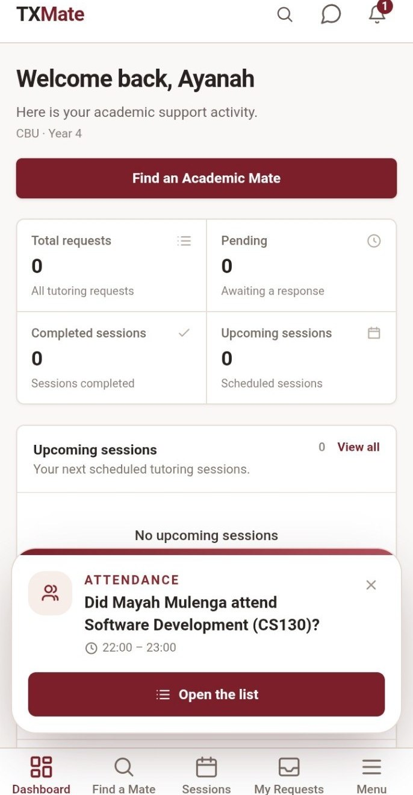
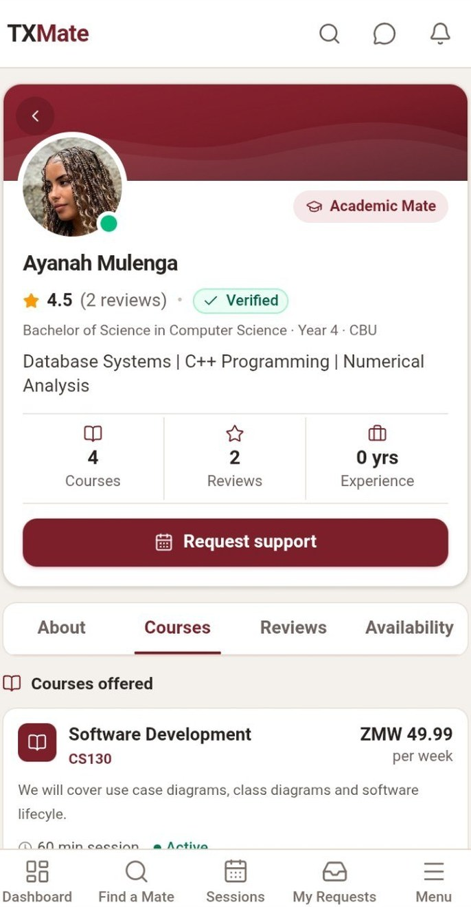
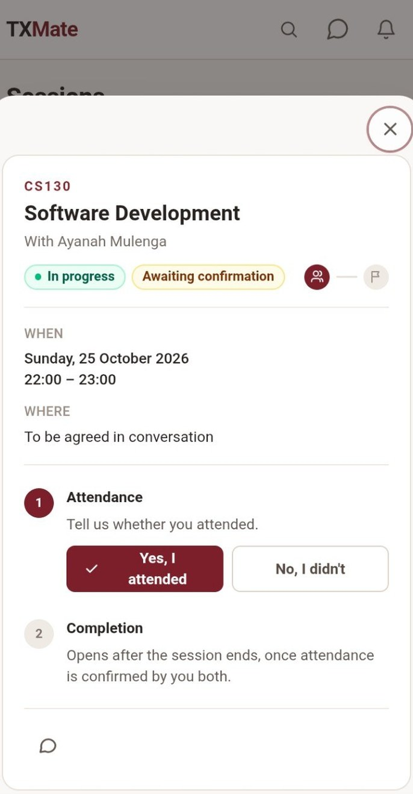
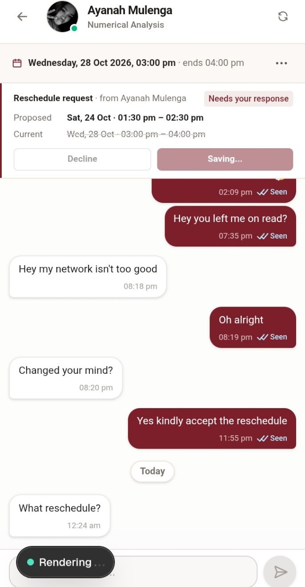
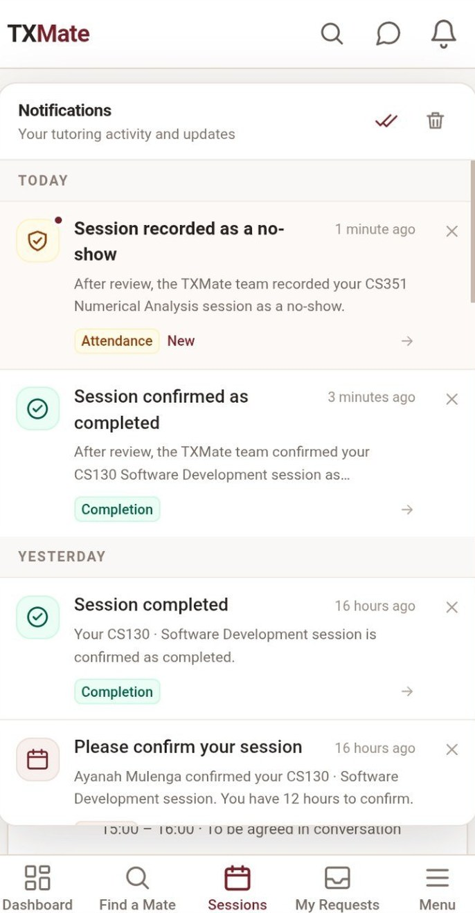

TXMate
One place for university students to find an Academic Mate, request tutoring and keep track of every session.
I designed the flow around the full tutoring arrangement: tutor discovery, requests, recurring schedules, one-to-one or group sessions, messages, rescheduling, attendance and completion confirmation.
Explore the code ↗- Discover
- Request
- Schedule
- Attend
- Confirm
- Discovery & profilesSearch by course and compare Academic Mate profiles, with verification and reviews.
- Session managementManage tutoring arrangements, schedules, messages and rescheduling.
- Accountability workflowsAttendance, completion confirmation and notifications.
Find & set up






Attend, reschedule & confirm






